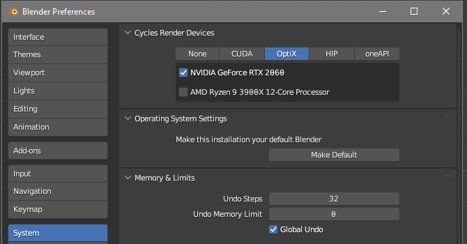
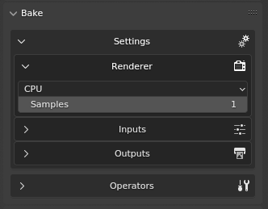
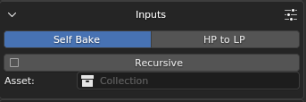
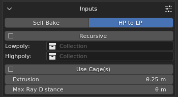
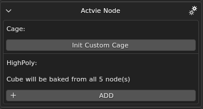
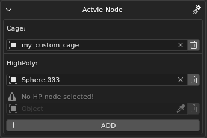
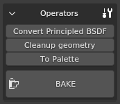
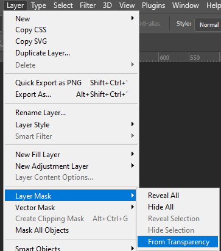

dag4blend Texture Baker
Overview
This tool is designed to convert “heavy” materials into a single low-resolution
rendinst_simple material, suitable for use on the last LOD (level of detail).
It is also useful for porting assets to mobile projects.
Starting from version 2.2.0, the baker also supports re-baking Blender’s
Principled BSDF, enabling the transfer of assets with textures from other
software via GLB/glTF with texture conversion, as well as “mixing” materials
directly in Blender.
Where to Find It
The Bake panel is located in the N-panel under the Dagor tab. To ensure proper operation of the baking process, you need to specify the rendering device in Blender’s Edit > Preferences settings. However, this parameter is set for any render, so it is likely already configured.
Settings
Here, various parameters for the upcoming bake are organized into groups.
Renderer
You can choose the device to perform the baking – either the CPU or GPU – and set the number of samples. It is recommended to start with one sample and only increasing the value if the bake appears “noisy”.
Inputs
Here, you can select the baking mode – either from the object to itself or from one object to another. Depending on the mode, the parameters may vary slightly.
 Asset: the collection containing the asset to be baked. It will be converted to Lowpoly when the mode is switched.
Highpoly: the collection with the asset from which the bake will be performed. This is only relevant in the second mode, so it is hidden in the first.
The Recursive checkbox determines whether to check child collections. If baking a house for War Thunder that consists of a base and several
_dp, it’s better to place their collections in a parent collection and activate this parameter.
Important
The parameters below are only relevant when baking from one object to another, but not from UV to UV.
Use Cage: whether to use a cage for baking. This option is only relevant when baking from object to object, so it is hidden in the first mode.
Extrusion: defines how much the search area for the high-poly will be “inflated” along the normal. If the Use Cage checkbox is enabled and a custom cage is not specified, the low-poly node itself will be used as the cage, inflated evenly without considering sharp edges. If the checkbox is not enabled, the inflation will account for sharp edges.
Max Ray Distance: specifies the distance from the cage (inward) to search for baking information. If set to zero, the ray is not limited.
Active Node
This tab only exists in the HP to LP mode and allows for detailed settings for Lowpoly nodes. It displays the parameters of the active object.
 Cage: if the Use Cage checkbox is active, you can specify a custom cage here. Press Init Custom Cage to create a parameter reference, then select the desired node. This can be done from the general list by clicking on the parameter, using the eyedropper from the Viewport or Outliner, or simply dragging the node from the Outliner. You can delete the parameter entirely by pressing the trash can icon, or reset it with X and select a different node. If the selected node does not match the topology of the baked object, the bake will fail with an error.
Important
Do not place the cage in the Lowpoly or Highpoly collection.
Highpoly allows you to specify nodes from which information should be captured for the active node. If nothing is specified, the bake will be performed from each Highpoly node sequentially, which can take a significant amount of time. It is better to specify only the relevant sources. To do this, click on ADD and select sources similarly to how the cage is selected. Multiple sources can be selected.
Outputs
This section allows you to define what you want to get as output.

tex_d, tex_n: the checkboxes for selecting the corresponding textures. If neither is enabled, the bake will not start as there is nothing to bake.
Width and Height: rhe resolution of the output texture. Limited to powers of two.
If the Reveal Result checkbox is enabled, the add-on will open the directories containing the output files after a successful bake.
Tex Dirpath: where to save the textures. You can enter the path as text or select it through Blender’s built-in file browser by clicking the folder icon on the right.
open texture folder: opens the specified directory using your operating system’s file explorer.
If the Save Proxymat checkbox is enabled, the Baker will also create new
rendinst_simpleproxy materials from the new textures. If one of the textures is missing in the directory (for example, if only tex_d was baked), the process will be interrupted with a corresponding log entry. The path for saving it is set in the same way as for textures.
The add-on can also assign the resulting proxymat immediately after baking. In
this case, unnecessary UVs and materials will be removed, and the Bake UV
channel will be renamed to UVMap, which the add-on expects for correct display.
This saves time if you need to export the result as render instance. If the
Viewport result is unsatisfactory and needs re-baking, the assignment of the
proxymat and deletion of information can be undone with Ctrl+Z.
See also
For more information, see Proxymats.
Operators
Convert Principled BSDF: as the name suggests, this converts Blender’s standard shader, allowing it to be baked as rendinst_simple. Useful when the material was mixed directly in Blender or when an asset was imported from GLB/glTF from another program along with textures.
Cleanup geometry: removes unsupported shader polygons from the source geometry. How do you know if a shader is supported? In the Shader Editor, the material’s Shader node should have outputs for
_tex_d_rgb,_tex_d_alpha,_tex_met_gloss, and_tex_mask. This feature is primarily designed for decals, which cannot be baked. Blender cannot bake through transparent polygons; the top polygon will completely overwrite the information beneath it.If there is an unsupported shader on the geometry that is important for baking, you can reassign it to a similar one. For example, the unsupported rendinst_mask_layered can be replaced with rendinst_perlin_layered. This does not have to be done manually. In the directory with the installed add-on, there is a text file with remapping parameters:
C:\Users\<username>\AppData\Roaming\Blender Foundation\Blender\<version number>\scripts\addons\dag4blend\extras\remap.txt.Use a colon to specify the name of the missing shader node and the name of the replacement node. If you only want to change the material, specify its name. If you also want to remap texture coordinates, include them as well (same names with the
_uvpostfix).To Palette: as the name suggests, creates a “palette” of materials. A plane is created for each material with the name of that material and the Bake UV layer. Useful when you need to re-bake tiles – the actual geometry of the asset would only get in the way for such a task.
BAKE: starts the baking process. Creates texture files (asset collection name + texture type postfix separated by
_). The collection name is truncated at the first dot, somy_material.001createsmy_material_tex_d.tifinstead ofmy_material.001_tex_d.tif. It also removes endings indicating the LOD number.If something goes wrong, it will display an explanatory popup and write a log entry.
Baking is performed on the UV channel named Bake – you need to create it for all low-poly objects. Shaders are bound to the naming of UV channels, so renaming existing ones is not recommended.
Scene Requirements
All geometry used in the bake must be visible and selectable when you press the BAKE button. The only exceptions are optional cages.
The source geometry must only have supported shaders. The receiver geometry must have a UV channel named
Bake. For self-baking, this is the same asset.Naturally, the UV layout must be reasonable. It’s not enough to just create a UV channel; you also need to unwrap it properly.
Everything outside the unit square will not affect the result – shift overlapping geometry left/up to avoid strange artifacts from blending information from different triangles in the same place.
Limitations
The output textures and proxymat are ready for use in the engine and display correctly in most image viewers and editors. However, Photoshop is currently an exception. It does not interpret the alpha channel correctly, neither displaying it as the fourth channel nor as a layer mask.

If you need to make changes to the alpha channel of such a texture, here’s a temporary solution: Layer > Layer Mask >From Transparency allows you to extract the alpha channel into a mask. After this, you can copy the mask’s contents, delete the mask, and place its copied contents into a new alpha channel.
This solution is not the most elegant, but it works. Apply it only when necessary to edit the alpha.